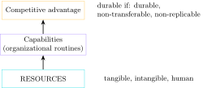

Definition
Critique of industry analysis: in the 1980s strategic analysis focused almost only on the firm–environment relation (five forces); internal analysis was confined to implementation; firm characteristics are not determined a priori by the strategies adopted; strategy is not only allocating resources to raise long-run profitability but also expanding and strengthening resources and competences themselves.
The RBV sees the firm as a heterogeneous set of resources and competences, the priority basis for competitive advantage:
Model
| Resource type | Content | Ease of valuation |
|---|---|---|
| Tangible | financial resources, material assets | easiest; less and less |
| decisive for advantage | ||
| Intangible | technological knowledge (patents, | medium |
| copyright), brands, reputation | ||
| Human | competences, knowledge, analysis and | very hard to value and |
| decision skills of people | manage |
Competences derive from the firm's ability to combine and coordinate resources (organizational competences: people collaborating cohesively). They are analysed comparatively — a competence matters by its position relative to other firms' — through value-chain analysis. Strategic resources are scarce and relevant. Advantage is durable if resources and competences are:
| Condition | Question |
|---|---|
| Durable | does it wear out or become obsolete fast? |
| Non-transferable | can a rival buy it or hire it away? |
| Non-replicable | can a rival build the same thing internally? |
Integrated approach
Porter's model looks at the market (external potential); the RBV at resources (internal potential). Only an integrated view gives a wide enough knowledge base to judge a strategy against both the structural/local environment and the firm's resources, crossing competitive comparison with the firm's unique, inimitable identity.
Example
Coca-Cola's recipe and brand (intangible), bottling network (tangible) and marketing know-how (human, routines) are durable and hard to replicate — hence differentiation that outlasts imitation. A generic machine any rival can buy is a resource but not a source of sustained advantage.
Pitfall
A resource is not an advantage until a capability deploys it in a way customers value. Tangible ≠ strategic: the easiest resources to value are the least decisive.
Recall
Draw resources → capabilities → advantage; classify three resource types; state the three durability conditions; explain why Porter and RBV must be integrated.
Picture

Advantage is built bottom-up from resources through routines.